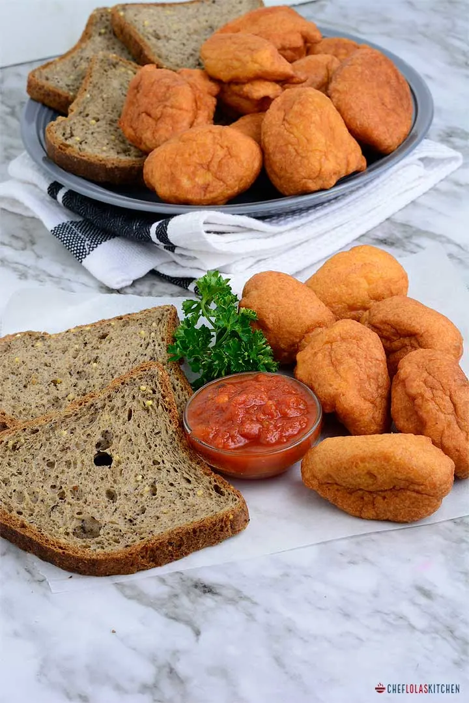

Akara

Description
Akara is a very delicious dish made from blended beans,
it is best served with bread but some prefer taking it with pap or garri.
Nothing warms up a Saturday morning like a plateful of Akara
supported with a bowl of pap (popularly called "Akamu") or freshly
baked "Agege Bread".
Ingredients
- Beans
- Red Ball Pepper (half of one red ball pepper)
- Chopped Onions (Optional)
- Crayfish (Optional)
- Salt to Taste
- 1/4 cup of water for blending
- Vegetable Oil ( Enough For Deep Frying)
Steps
- Soak the beans in room temperature water for
about 15 to 20 minutes until the skin is swollen.
-
Drain the water and place the beans in the food processor.
-
Pulse the food processor a few times to remove the skin from the beans.
-
Pour the beans into a large bowl, add enough water,
and gently swirl the beans around so the skin can float.
-
Repeat this process until the beans are clean.
-
Pour the clean beans into a blender, add the water, red bell pepper, and crayfish.
-
Pour the batter into a large bowl and whisk it until it's light and fluffy.
-
Add the finely diced onion.
-
Heat some oil (enough to fry the Akara) in a pan on medium to high heat.
-
Add the batter in batches to avoid overcrowding.
-
Flip once or twice to ensure even browning—fry
the Akara for about five to six minutes, or until golden brown on all sides.
-
Before removing any Akara from the oil, gently press them down to remove any excess oil.
-
Remove the Akara from the pan and drain on a paper towel-lined plate.
-
Your Akara is Readyyy!! Enjoy.
Home